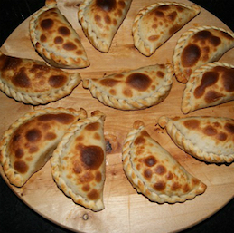

Welcome
The Ab CAFFÈ is a project of a tiny joyful café, that will be part of the neighbourhood cultural center Nido de las Artes. Here the locals will get their morning coffee, to stay or to go, and meet up with friends and neighbours. The place is planned to be cozy and lively, fulfilling all the senses with beauty, art and culture. In Ab CAFFÈ we think in fussion food between Panamanian and brazilian food, you will enjoy brigadeiros, pastries, empanadas, coxinhas, esfihas, fresh juice and inigulable Coffee from both countries.
Coxinhas
Pão de Queijo

Kaffa

Brigadeiro
Galletas
Empanadas

All the proceeds of the Ab CAFFÈ going to the social and cultural projects of the Nido de las Artes Cultural Center.